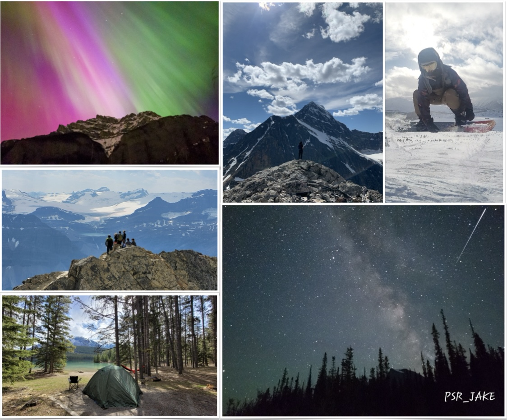

Life around Edmonton and the Rockies
I lived in Edmonton, Alberta from 2019 onward, and that stretch of time made the Canadian Rockies feel close and familiar. Banff, Jasper, and the surrounding trails became regular escapes from academic routines.
What started as simply getting outside became one of the most grounding parts of my life.